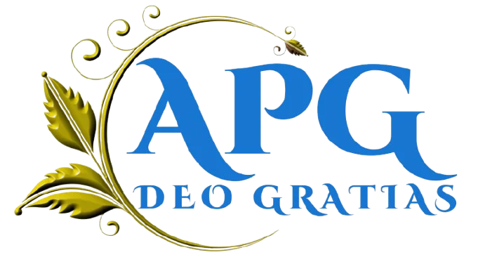

AgriTech · IA
Data & IA
AgroClimat — Résilience climatique
Intelligence artificielle pour anticiper les phénomènes climatiques et protéger l'agriculture.
Tester le prototype Streamlit →Data & IA, développement digital et transformation des systèmes d'information.
Intelligence artificielle pour anticiper les phénomènes climatiques et protéger l'agriculture.
Tester le prototype Streamlit →Segmentation et évaluation du risque de crédit pour éclairer les décisions des institutions financières.
Conception, développement technique et optimisation SEO de plateformes institutionnelles et académiques.
Conception et développement du site web du cabinet, structuration de la présence digitale, optimisation SEO et mise en valeur de son positionnement en ingénierie financière.
Visiter le site →Analyse fonctionnelle et dématérialisation des services publics ministériels, avec sécurisation des flux.
Diagnostic et dématérialisation des procédures de gestion des carrières et du personnel.
Plateforme stratégique d'évaluation et d'orientation du capital humain pour accompagner les décideurs.
Découvrir AXI'HOM →
Conception de la plateforme de réservation et de la présence digitale pour les événements, séjours, déplacements et projets professionnels.
Une expérience pensée pour offrir simplicité, confort et sérénité.